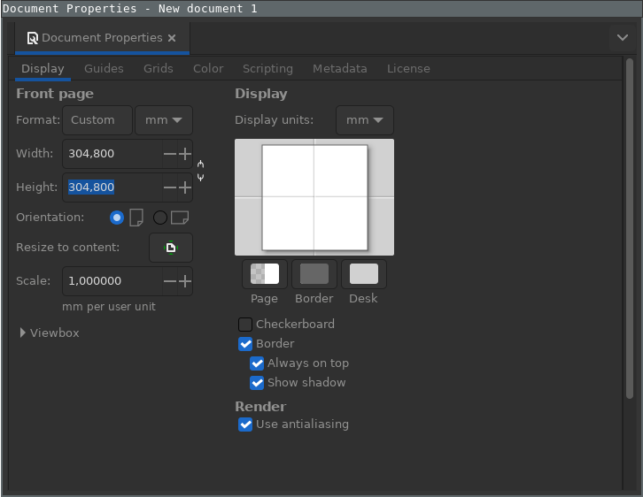
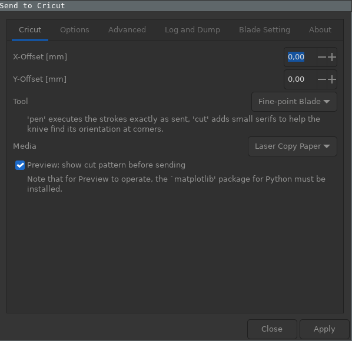

Configuring CutcutGo
Warning
Make sure to reprogram the micro-controller of your Cricut Maker before following these instructions ! See Flashing the CutcutGo bootloader for more details.
Introducing Inkscape-CutcutGo
Inkscape-CutcutGo is a fork of an existing Inkscape extension called Inkscape-Silhouette, written by Jürgen Weigert (juergen@fabmail.org) and other contributors.
This extension has been heavily modified to fit Cricut’s Maker features, but only supports Cricut’s Fine Point blades and pens at the moment.
Install Inkscape-CutcutGo
Follow Inkscape-CutcutGo installation instructions to download and install this extension into your Inkscape software.
Configure Inkscape to fit the cutting mat
{kind=link}
Click the File menu and then the Document properties menu entry
Set the current document width and height to 304.8 millimeters (12” cutting mat)
Close the dialog window
Plot a path (or a series of paths)
{kind=link}
Open your document with inkscape.
Note: documents in px are plotted at 96dpi
Convert text objects to paths (Path - Convert object to path)
Select the parts you want to plot.
Open the extension. If you want to use the same cut settings for all of the paths in your file, use “Extensions -> Export -> Send to Cricut”
Set your desired plot parameters. There are numerous aspects you can control with the dialog, here are just the core highlights:
X-Offset, Y-Offset An additional offset of your drawing from the top left corner. Default is 0/0
Tool Fine-point blade mode drews small circles for orientation of the blade, Pen mode draws exactly as given.
Media Select a predfined media. For now, only “Laser Copy Paper” ,aterial is supported.
To start the cut, in “Send to Cricut, click the “Apply” button. If preview option has been selected, click the “Cut” button in the next dialog box to start cutting.